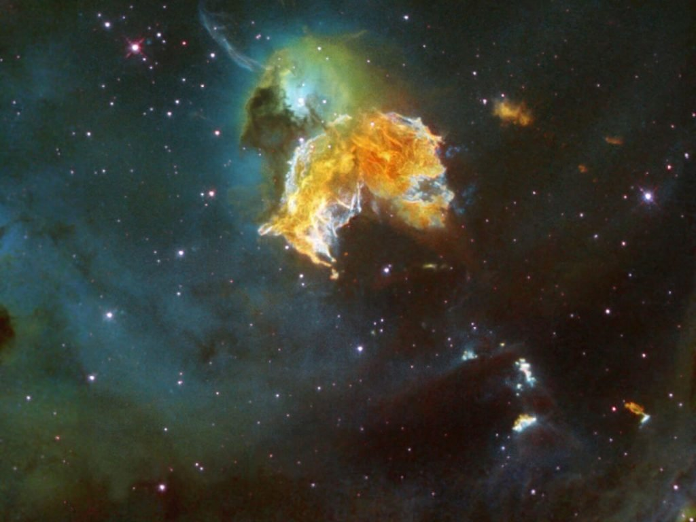

ဒီပုံက အာကာသထဲမှာ လွှတ်တင်ထားတဲ့ နာဆာရဲ့ Hubble နက္ခတ်ကြည့် တယ်လီစကုပ် မှန်ပြောင်းကြီးကနေ ရိုက်ကူး ထားတဲ့ပုံ ဖြစ်ပါတယ်။
ဒီ ဓါတ်ငွေ့တိမ်တိုက်ကြီးကို N63A လို့ နာမည်ပေးထားပါတယ်။ ဒီ တိမ်တိုက်ကြီးဟာ အပေါ်က ပြောခဲ့ သလိုပဲ ကြယ်ကြီး သေသွားပြီး ကျန်ခဲ့တဲ့ အကျွင်းအကျန်တွေ ဖြစ်ပါတယ်။
ဒီကြယ်သေကြီးရဲ့ ရုပ်ကြွင်းဟာ မစ်ကီးဝေး ဂလက်ဆီကနေ အလင်းနှစ် ၁၆၃,၀၀၀ အကွာမှာ ရှိတဲ့ မက်ဂျဲလန် တိမ်တိုက်ကြီး (Large Magellanic Cloud) ထဲမှာ တည်ရှိပါတယ်။ (တိမ်တိုက်ကြီး ဆိုပေမယ့် တကယ်က ဂလက်ဆီ ကြယ်စု အသေးစား လေးပါ။)
ဒီ မက်ဂျဲလန် တိမ်တိုက်ကြီး ထဲမှာ ကြယ်သစ်တွေ ဖြစ်နေတဲ့ ဒေသရပ်ဝန်း (star forming region) တွေ အများအပြား ရှိနေပါတယ်။ ဒီ ရပ်ဝန်း တွေမှာ နက်ဗြူလာ ခေါ်တဲ့ ဓါတ်ငွေ့ တိမ်တိုက်ကြီးတွေ သိပ်သည်းလာပြီး ကြယ်သစ်တွေ ဖြစ်ထွန်း နေကြတာပါ။
ဒီ နက်ဗြူလာ တိမ်တိုက်တွေဟာ ကြယ်တွေ သေဆုံးတဲ့ အချိန် ဆူပါနိုဗာ ခေါ်တဲ့ ပေါက်ကွဲမှုကြီး ဖြစ်ပြီး ကြွင်းကျန်ရစ်တဲ့ ဓါတ်ငွေ့တွေ ဖြစ်ပါတယ်။ ဒီ ကြယ်သေရဲ့ အကြွင်းအကျန် တွေကနေပဲ ကြယ်သစ်တွေ ပေါက်ဖွား လာကြတာ ဖြစ်ပါတယ်။

အခုလို ဆူပါနိုဗာ ပေါက်ကွဲမှုရဲ့ ဝန်းကျင်က ကြယ်သစ် ဖြစ်ထွန်းမှု တွေကို ခနတာ ရပ်တန့် သွားစေခဲ့ ပေမယ့်လဲ ဒီ N63A ဓါတ်ငွေ့တိမ်တိုက်ဟာ သက်တမ်းအားဖြင့် အရမ်းကို နုပါသေးတယ်။ ဒါ့ကြောင့် တဖြည်းဖြည်း သူ့ရဲ့ ပုံသဏ္ဍာန်က ပြောင်းလဲ နေပါလိမ့် အုံးမယ်။ အနာဂါတ် ကာလမှာတော့ အခြေကျ သွားတဲ့ အခါကျ သူ့ရဲ့ ကြွင်းကျန်တဲ့ ဓါတ်ငွေ့တွေကနေ ကြယ်သစ်တွေ ပြန်ဖြစ်ထွန်း လာလိမ့်အုံးမယ်လို့ ဆိုပါတယ်။
Reference: NASA